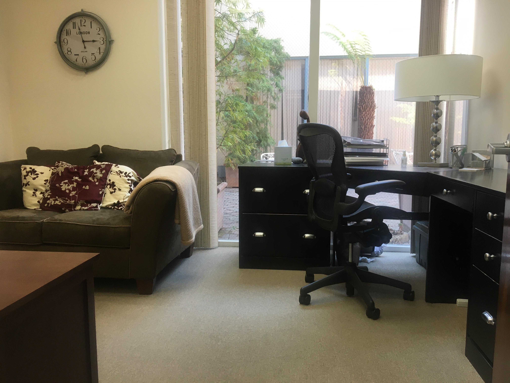
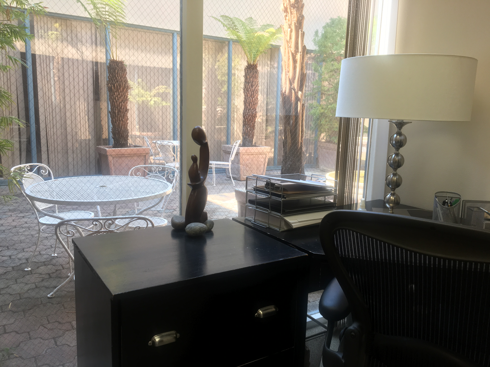
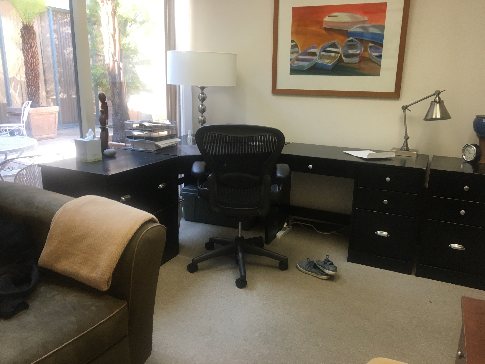

My mission is to restore you to optimal metabolic health, so you can live a long and healthy life, fulfilling your dreams and passions.



The Metabolic Health Clinic
Your initial consultation will last 60 minutes so that Dr. Lam can formulate a personalized, prescription for treatment and weight loss, customized and tailored specifically to your needs. An initial consultation visit may include, if indicated:
- A detailed review of your medical and weight history;
- A detailed review of your medications, identifying drugs that could be negatively impacting your weight, as well as diabetes and blood pressure meds, that could put you at risk during a fast;
- A detailed review of your feeding and fasting schedules;
- A detailed review of past labs and discussion regarding new laboratory studies to screen for hormonal imbalances, to monitor your metabolism;
- An analysis of your current nutrition, exercise, sleep and mindset;
- Review of your feeding and fasting schedules;
- Anthropometric measurements, such as waist circumference;
- Laboratory studies to screen for hormonal imbalances and to monitor your metabolism;
- Microbiome testing to understand the potential role of your gut microbiome;
- Blood glucose and ketone testing;
The following may be arranged on your behalf:
- Resting metabolic rate testing;
- Body composition analysis, the gold standard in research studies to assess and track your body fat percentage;
- Continuous glucose monitoring as biofeedback to understand the impact of food, exercise, mindset and sleep on your blood sugars;
Please complete
this form (preferably one week in advance) so that we may extensively review your information prior to your visit.
We appreciate your busy schedules and respect your time. Traditionally, our follow-up visits are scheduled on a weekly to monthly basis during the active treatment and weight loss period directly with Dr. Lam. The frequency of follow up visits may be customized to be less frequent (for flexibility) or to be more often (for more accountability and intensity). For example, we may need to see patients with diabetics on hypoglycemic agents or insulin more frequently to adjust or remove medications, that could potentially put them at risk during a fasting protocol. Once you have reached your goal weight, we will focus on weight maintenance and further space out your follow up visits.
INSURANCE
Most insurance plans do not cover visits primarily for weight loss. At this time, we do not contract with insurancecompanies. However, if losing weight is a treatment for a medically diagnosed disease (such as obesity, diabetes, or hypertension), we can provide a superbill, a summary of your medical costs, for you to submit to your insurance company for partial reimbursement of your out of pocket costs. Call the customer service phone number listed on your insurancecard, and ask "What is the best way to submit my claim with a superbill?"
If losing weight is a treatment for a medically diagnosed disease (such as obesity, diabetes, or hypertension), your visits and lab tests may be qualified medical expenses, and therefore, consider bringing your Health Savings Account or Flexible Spending Account debit cards to your visit. Most employers offer high-deductible health plans paired with a tax-free Health Savings Account or Flexible Spending Account. Depending on your tax bracket, that can be a 35% savings. Please check with your tax accountant first.
At this time, the monthly microbiome collection program is free of charge to you. You can still use your regular insurance for laboratory services (any Quest or Labcorp of your choice).
Please message us to receive more information about these programs.